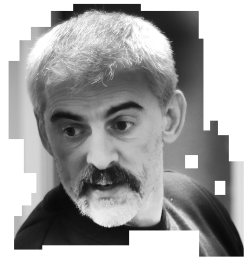

Barry is an audio and video enthusiast. His practice includes work with DIY electronics, audio technology and moving images, interactive installation, DJing, VJing and creative technology. His performance projects use a mix of improvisation, folk idioms, and noise.
Composer, improviser and percussionist Saul Rayson studied drums with several practitioners in the UK and at The Drummers Collective in New York. His practice involves extending and adapting drum membranes, exciting the drums in multiple ways, and using them as a sound and control source.
Alex is a Product Designer turned academic who specialises in music technology accessibility. Commercial products designed by Alex include the Novation Peak polyphonic synthesiser and Circuit Mono Station, a sequenced mono synth.